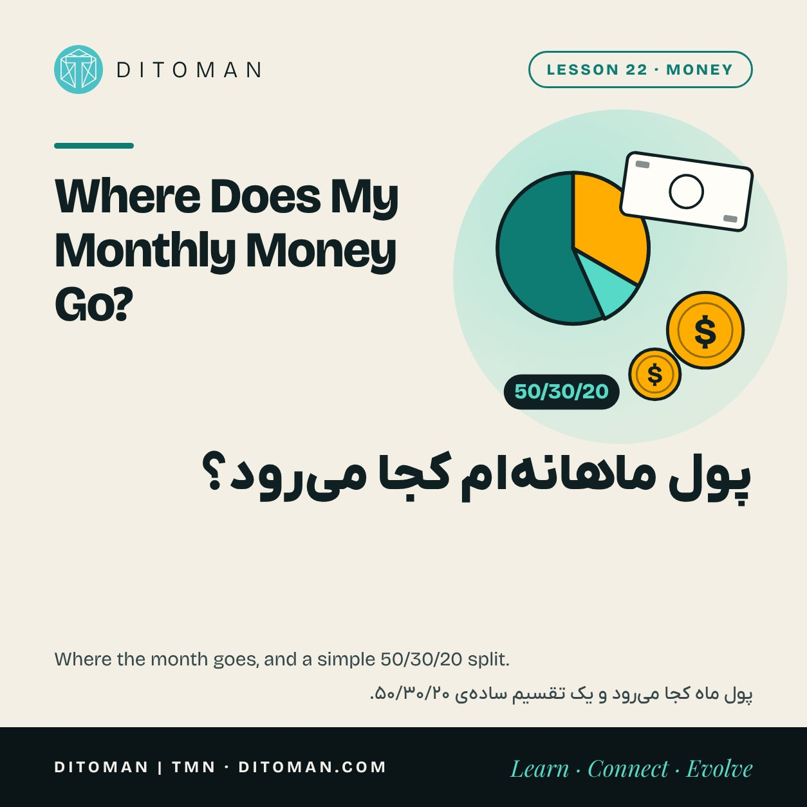

Aylık param nereye gidiyor?
پول ماهانهام کجا میرود؟
Çoğu insan paranın ay bitmeden kaybolduğunu hisseder. Bu ders, bilinen bir pratik kural ve bir aylık bir alışkanlık kullanarak nereye gittiğini görmenin basit bir yolunu gösterir.
بیشتر ما حس میکنیم پول پیش از پایان ماه آب میشود. این درس یک راه ساده نشان میدهد تا ببینیم کجا میرود؛ با یک قاعدهی سرانگشتیِ شناختهشده و یک عادت یکماهه.
Ders İçeriği
محتوای درس
Dersi İngilizce veya Farsça okuyabilirsiniz.
درس را به فارسی یا انگلیسی بخوانید.
Ayın yirmisi ve hesap neredeyse boş. Olağandışı bir şey olmadı: ne acil bir durum ne de büyük bir alışveriş. Yine de para gitti.
Bu, dünyadaki en yaygın para deneyimidir ve basit bir nedeni vardır. Küçük ödemeler kolay unutulur ve bir ay onları saklamaya yetecek kadar uzundur. Bütçe, ayı daha olmadan görmenin bir yolundan ibarettir.
01. Bütçe nedir ve ne değildir
Bütçe, gelirinizin planıdır: ne kadar geliyor ve her bölümü ne için. Bir ceza değildir ve her şeye hayır deme sözü de değildir.
Onu bir harita olarak düşünün. Harita yürümenizi engellemez; nerede olduğunuzu gösterir. Onsuz harcama rastgele hissedilir. Onunla seçebilirsiniz.
02. Kesmeyle değil, bakmayla başlayın
Herhangi bir şeyi değiştirmeden önce bir ay yalnızca izleyin. Her ödemeyi yazın ya da banka uygulamanızın zaten tuttuğu listeyi kullanın.
Ay sonunda ödemeleri üç yığına ayırın: ödemeniz gerekenler, ödemeyi seçtikleriniz ve kenara koyduğunuz para. Çoğu insan en az bir yığının büyüklüğüne şaşırır.
Rakamları yargılamayın. Bu ilk ay yalnızca görmek içindir.
03. Bilinen bir pratik kural: 50/30/20
Amerikalı hukukçu ve sonradan senatör olan Elizabeth Warren, 2005 tarihli *All Your Worth* kitabında, vergiden sonra hesabınıza fiilen ulaşan eline geçen maaşın basit bir bölünmesini anlattı.
İhtiyaçlar için yüzde 50: konut, faturalar, ulaşım, market, temel giyim, sigorta, sağlık ve borçların asgari ödemeleri.
İstekler için yüzde 30: dışarıda yemek, eğlence, seyahat, abonelikler, fazladan giysiler.
Birikim için yüzde 20: acil durum fonu, daha büyük bir hedef, ek borç ödemeleri.
| Yığın | Eline geçen maaştan pay | Örnekler | Uymuyorsa |
|---|---|---|---|
| İhtiyaçlar | 50% | Konut, faturalar, ulaşım, market, sigorta, asgari borç ödemeleri | Önce en büyük ihtiyacı arayın |
| İstekler | 30% | Dışarıda yemek, eğlence, seyahat, abonelikler | Birikime dokunmadan önce burada kısın |
| Birikim | 20% | Acil durum fonu, hedefler, ek borç ödemeleri | Daha küçük bir pay tutun ama tutun |
04. Kural uymadığında kullanmak
Kural bir başlangıç noktasıdır, bir yasa değil. Bazı şehirlerde tek başına kira maaşın yarısından fazlasını alır. Bazı aylarda bir tıbbi fatura her şeyi değiştirir.
İhtiyaçlar yüzde 50'nin üzerindeyse vazgeçmeyin. Fikri koruyun, rakamları değiştirin: belki şimdilik 60/25/15. Önemli olan üç yığının da var olması ve birikimin artakalan değil, bir yığın olmasıdır.
05. Önce kendinize ödeyin
Bütçelemedeki en yararlı alışkanlık küçüktür. Gelirinizin geldiği gün, bir şey harcamadan önce birikim kısmını ilk olarak taşıyın. Ay sonuna kadar beklerseniz, genellikle taşınacak bir şey kalmaz.
Küçük bir tutar bile sayılır. Alışkanlık büyüklükten daha önemlidir ve büyüklük sonradan artabilir.
06. On dakikada aylık gözden geçirme
Ayda bir, üç soruyla on dakika oturun. Paranın çoğu nereye gitti? Beni ne şaşırttı? Gelecek ay deneyeceğim tek değişiklik ne?
Bir değişiklik yeter. Bütçeler her şeyi bir anda düzeltmeye çalıştıklarında başarısız olur.
07. Fiyatlar değişir, bu yüzden bütçe de değişmelidir
Fiyatlar yükseldiğinde, Ders 12'nin gösterdiği gibi aynı gelir daha azını alır. Altı ay önce yazılmış bir bütçe şimdiden eskimiş olabilir. Temel masraflarınızın maliyeti değiştiğinde rakamları gözden geçirin, yalnızca belirli bir tarihte değil.
Bundan Ne Çıkarmalı
Bütçe ayınızın bir haritasıdır, bir ceza değil.
Bir şeyi değiştirmeden önce bir ay boyunca bakın.
50/30/20 bir pratik kuraldır: ihtiyaçlar, istekler, birikim. Rakamları hayatınıza göre ayarlayın.
Gelir geldiği gün önce birikimi taşıyın.
Ayda bir gözden geçirin ve her seferinde tek bir şeyi değiştirin.
بیستم ماه است و حساب تقریباً خالی. اتفاق عجیبی نیفتاده: نه اورژانسی بوده و نه خرید بزرگی. ولی پول رفته است.
این رایجترین تجربهی مالی دنیاست و دلیلش ساده است: پرداختهای کوچک را راحت فراموش میکنیم و یک ماه آنقدر بلند است که آنها را پنهان کند. بودجه چیزی نیست جز راهی برای دیدن ماه، پیش از آنکه بگذرد.
۰۱. بودجه چیست و چه نیست
بودجه برنامهای برای درآمد است: چقدر میآید و هر بخشش برای چیست. تنبیه نیست و قول دادن به «نه» گفتن به همهچیز هم نیست.
آن را مثل یک نقشه ببینید. نقشه جلوی راه رفتن را نمیگیرد؛ نشان میدهد کجا ایستادهاید. بدون نقشه، خرجکردن تصادفی به نظر میرسد. با نقشه میشود انتخاب کرد.
۰۲. اول نگاه کنید، نه کم کنید
پیش از آنکه چیزی را عوض کنید، یک ماه فقط تماشا کنید. هر پرداخت را بنویسید یا از فهرستی استفاده کنید که اپ بانکتان خودش نگه میدارد.
آخر ماه پرداختها را در سه دسته بریزید: چیزهایی که باید میپرداختید، چیزهایی که خودتان انتخاب کردید و پولی که کنار گذاشتید. بیشتر آدمها از اندازهی دستکم یکی از این دستهها تعجب میکنند.
دربارهی عددها قضاوت نکنید. این ماه اول فقط برای دیدن است.
۰۳. یک قاعدهی سرانگشتیِ شناختهشده: ۵۰/۳۰/۲۰
الیزابت وارن، حقوقدان آمریکایی و بعدها سناتور، در کتاب ۲۰۰۵ خود به نام «All Your Worth» تقسیمی ساده از درآمد خالص را معرفی کرد؛ یعنی پولی که بعد از مالیات واقعاً به حسابتان میرسد.
۵۰٪ برای نیازها: مسکن، قبضها، رفتوآمد، خوراک، پوشاک اولیه، بیمه، درمان و حداقل قسط بدهیها.
۳۰٪ برای خواستهها: بیرون غذا خوردن، سرگرمی، سفر، اشتراکها، لباس اضافه.
۲۰٪ برای پسانداز: صندوق روز مبادا، یک هدف بزرگتر، پرداخت اضافهی بدهی.
| دسته | سهم از درآمد خالص | نمونهها | اگر جور درنیامد |
|---|---|---|---|
| نیازها | ۵۰٪ | مسکن، قبضها، رفتوآمد، خوراک، بیمه، حداقل قسط | اول بزرگترین نیاز را بررسی کنید |
| خواستهها | ۳۰٪ | بیرون غذا خوردن، سرگرمی، سفر، اشتراکها | پیش از دستزدن به پسانداز، از اینجا کم کنید |
| پسانداز | ۲۰٪ | صندوق روز مبادا، هدفها، پرداخت اضافهی بدهی | سهم کوچکتر، ولی حتماً باشد |
۰۴. وقتی قاعده جور درنمیآید
این قاعده نقطهی شروع است، نه قانون. در بعضی شهرها اجاره بهتنهایی بیش از نیمی از حقوق را میبرد. در بعضی ماهها یک قبض درمان همهچیز را عوض میکند.
اگر نیازها از ۵۰٪ بیشتر است، دست نکشید. ایده را نگه دارید و عددها را عوض کنید؛ مثلاً فعلاً ۶۰/۲۵/۱۵. مهم این است که هر سه دسته وجود داشته باشند و پسانداز یک دسته باشد، نه چیزی که ته ماه میماند.
۰۵. اول به خودتان بپردازید
مفیدترین عادت در بودجهبندی کوچک است: روزی که درآمد میرسد، پیش از هر خرجی سهم پسانداز را کنار بگذارید. اگر منتظر آخر ماه بمانید، معمولاً چیزی برای کنار گذاشتن نمانده است.
مبلغ کوچک هم حساب است. عادت مهمتر از اندازه است و اندازه را بعداً میشود بزرگتر کرد.
۰۶. مرور ماهانه در ده دقیقه
ماهی یک بار ده دقیقه با سه پرسش بنشینید. بیشترِ پول کجا رفت؟ چه چیزی مرا غافلگیر کرد؟ فقط یک تغییری که ماه بعد امتحان میکنم چیست؟
یک تغییر کافی است. بودجهها وقتی شکست میخورند که میخواهند همهچیز را یکجا درست کنند.
۰۷. قیمتها عوض میشوند، پس بودجه هم باید عوض شود
وقتی قیمتها بالا میروند، همان درآمد کمتر میخرد؛ همانطور که درس ۱۲ نشان داد. بودجهای که شش ماه پیش نوشتهاید شاید حالا کهنه شده باشد. عددها را وقتی مرور کنید که هزینهی چیزهای پایه جابهجا میشود، نه فقط در یک تاریخ ثابت.
چه برداشتی کنیم
بودجه نقشهی ماه ماست، نه تنبیه.
پیش از هر تغییری یک ماه فقط نگاه کنید.
۵۰/۳۰/۲۰ یک قاعدهی سرانگشتی است: نیاز، خواسته، پسانداز. عددها را با زندگی خودتان تنظیم کنید.
پسانداز را اول کنار بگذارید، همان روزی که درآمد میرسد.
ماهی یک بار مرور کنید و هر بار یک چیز را عوض کنید.
Birbirine bağlanan iki ders
دو درس مرتبط
Ders 12, fiyatlar yükseldiğinde bir bütçenin neden güncellenmesi gerektiğini açıklar. Ders 19, taksit planlarının gelecek ayın gelirinden nasıl sessizce daha büyük bir pay aldığını gösterir.
درس ۱۲ توضیح میدهد چرا وقتی قیمتها بالا میروند بودجه باید بهروز شود. درس ۱۹ نشان میدهد قسطها چطور بیصدا سهم بزرگتری از درآمد ماه بعد را میبرند.
Temel Kavramlar
مفاهیم کلیدی
- Bütçe
- Gelir ve eline geçen maaş
- İhtiyaçlar ve istekler
- Birikim oranı
- 50/30/20 kuralı
- Önce kendinize ödeyin
- Aylık gözden geçirme
- بودجه
- درآمد و درآمد خالص
- نیاز و خواسته
- نرخ پسانداز
- قاعدهی ۵۰/۳۰/۲۰
- اول به خود بپردازید
- مرور ماهانه
Öğrenme Hedefleri
اهداف یادگیری
- Bütçenin ne olduğunu ve ne olmadığını söyleyin.
- Bir aylık harcamayı izleyin ve üç yığına ayırın.
- 50/30/20 kuralını açıklayın ve kendi rakamlarınıza göre ayarlayın.
- Birikimin neden önce taşınması gerektiğini anlatın.
- On dakikalık bir aylık gözden geçirme planlayın.
- بگویید بودجه چیست و چه نیست.
- خرج یک ماه را ثبت کنید و در سه دسته بریزید.
- قاعدهی ۵۰/۳۰/۲۰ را توضیح بدهید و با عددهای خودتان تنظیم کنید.
- توضیح بدهید چرا پسانداز باید اول کنار برود.
- یک مرور ماهانهی دهدقیقهای برنامهریزی کنید.
Sınav
آزمونک
Aklınızda ne kaldığını kontrol edin. Yanıt her sorunun altında.
ببین چه چیزی در ذهنت مانده. پاسخ زیر هر پرسش آمده است.
Soru 1
پرسش ۱
Bütçelemede en iyi ilk adım nedir?
بهترین قدم اول در بودجهبندی چیست؟
A. Her harcama kategorisini bir anda kesmek
الف. همهی دستههای خرج را یکجا کم کنید
B. Bir aylık harcamayı izleyip kaydetmek
ب. یک ماه خرج را تماشا و ثبت کنید
C. İkinci bir banka hesabı açmak
ج. یک حساب بانکی دوم باز کنید
Doğru cevap: B
پاسخ درست: ب
Soru 2
پرسش ۲
50/30/20 kuralında 20 neyi temsil eder?
در قاعدهی ۵۰/۳۰/۲۰، عدد ۲۰ برای چیست؟
A. Birikim
الف. پسانداز
B. İstekler
ب. خواستهها
C. Vergiler
ج. مالیات
Doğru cevap: A
پاسخ درست: الف
Soru 3
پرسش ۳
Yüzdeler hangi paraya uygulanır?
درصدها به کدام پول مربوطاند؟
A. Vergiden sonra eline geçen maaş
الف. درآمد خالص، بعد از مالیات
B. Yalnızca ikramiyeler
ب. فقط پاداشها
C. Yalnızca zaten yapılmış birikim
ج. فقط پساندازی که قبلاً شده
Doğru cevap: A
پاسخ درست: الف
Soru 4
پرسش ۴
İhtiyaçlar gelirinizin yüzde 50'sinin üzerinde. Ders ne öneriyor?
نیازها بیش از ۵۰٪ درآمد شدهاند. درس چه پیشنهادی دارد؟
A. Bütçelemeden vazgeçmek
الف. بودجهبندی را رها کنید
B. Fikri korumak ve rakamları değiştirmek
ب. ایده را نگه دارید و عددها را عوض کنید
C. Birikimi tamamen bırakmak
ج. پسانداز را کاملاً قطع کنید
Doğru cevap: B
پاسخ درست: ب
Soru 5
پرسش ۵
'Önce kendinize ödeyin' ne demektir?
«اول به خودتان بپردازید» یعنی چه؟
A. Önce isteklere harcamak
الف. اول خرج خواستهها را بکنید
B. Gelir geldiği gün birikim kısmını taşımak
ب. همان روز رسیدن درآمد سهم پسانداز را کنار بگذارید
C. Borçları en sona bırakmak
ج. بدهیها را آخر بپردازید
Doğru cevap: B
پاسخ درست: ب
Kaynaklar
منابع
50/30/20 bir pratik kuraldır, resmî bir standart değil. Bu dersteki diğer her şey genel yönlendirmedir, kişisel finansal tavsiye değil.
۵۰/۳۰/۲۰ یک قاعدهی سرانگشتی است، نه یک استاندارد رسمی. بقیهی مطالب این درس راهنمای عمومی است و مشاورهی مالی شخصی نیست.
با هم دنبال میکنیمTakipte kal
Yeni dersler önce Ditoman'ın kanallarında duyurulur.
درسهای تازه اول در کانالهای دیتومان معرفی میشوند.